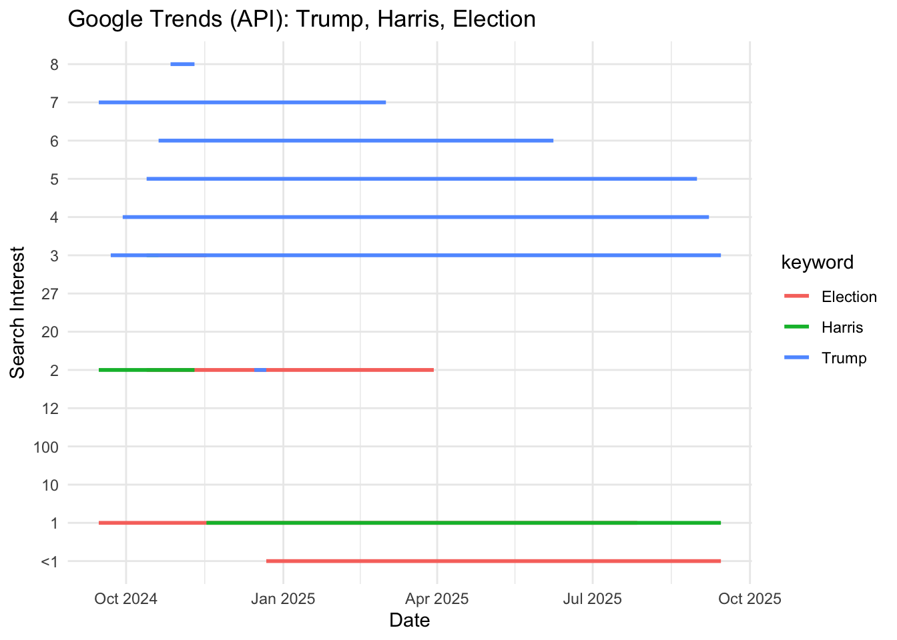

I downloaded the CSV from Google Trends for the terms “Trump, Kamala, Election” (past 12 months).
The CSV provides weekly intervals of search interest for each term.
# Load manual CSVmanual_df <-read.csv("assignment02/TrumpHarrisElection.csv", skip =2)# Rename columnscolnames(manual_df) <-c("Week", "Trump", "Harris", "Election")# Convert Week to Datemanual_df$Week <-as.Date(manual_df$Week)# Replace "<1" with 0 and convert to numeric / cleaning datamanual_df$Trump <-as.numeric(gsub("<1", "0", manual_df$Trump))manual_df$Harris <-as.numeric(gsub("<1", "0", manual_df$Harris))manual_df$Election <-as.numeric(gsub("<1", "0", manual_df$Election))# Previewhead(manual_df)
# If API call worked, extract and saveif (!is.null(api_res)) { the_df <- api_res$interest_over_timewrite.csv(the_df, "assignment02/TrumpHarrisElection_API.csv", row.names =FALSE)} else { the_df <-read.csv("assignment02/TrumpHarrisElection_API.csv")}# Previewhead(the_df)
date hits keyword geo time gprop category
1 2024-11-17 24 Trump US today 12-m web 0
2 2024-11-24 16 Trump US today 12-m web 0
3 2024-12-01 13 Trump US today 12-m web 0
4 2024-12-08 13 Trump US today 12-m web 0
5 2024-12-15 12 Trump US today 12-m web 0
6 2024-12-22 11 Trump US today 12-m web 0
# Plot API data# Personal note:The API data (the_df) is in "long" format because gtrendsR returns a tidy datasetggplot(the_df, aes(x = date, y = hits, color = keyword)) +geom_line(linewidth =1) +labs(title ="Google Trends (API): Trump, Harris, Election",x ="Date", y ="Search Interest") +theme_minimal()
`geom_line()`: Each group consists of only one observation.
ℹ Do you need to adjust the group aesthetic?

Comparison
Manual CSV:
Weekly data with separate columns for each keyword.
Easy to download but more to clean.
Not reproducible and must redownload new csv each time for updates.
API (gtrendsR):
More “real time” data when ran.
More reproducible and customizable (timeframe, region, search property).
Needs internet and may sometimes fail if Google blocks requests.
Overall, the manual CSV is quick for a one-time analysis, while the API method is better for reproducibility and automation.
Disclaimer
I used ChatGPT-5 to help me create an outline for this assignment and to better understand the steps involved. Since this was my first time working with data analysis in R, the outline provided useful guidance and helped me follow the process more confidently.
Prompt:
Given this assignment description and the provided CSV file, create an outline of the steps I need to take to complete the assignment. The outline should help me understand the workflow, including loading and cleaning the CSV, analyzing the data, using the gtrendsR API, and comparing the two methods.
Outline provided by ChatGPT5:
Assignment 2: Google Trends Data — Step-by-Step Outline Set Up Review the assignment instructions. Make sure the CSV file (TrumpHarrisElection.csv) is saved in the correct folder (assignment02). Open RStudio or Quarto to begin working. Method 1: Manual CSV Data Load the CSV into R using read.csv() (with skip to remove metadata rows). Clean the dataset: Rename columns for clarity. Convert the date column into Date format. Replace <1 values with 0 and convert to numeric. Preview the cleaned dataset with head(). Plot search interest for Trump, Harris, and Election on the same graph using ggplot2. Method 2: gtrendsR API Data Install and load the gtrendsR package. Query Google Trends for the same three terms over the last 12 months. Extract the interest_over_time dataset. Save the API results as a .csv and .RData file for reproducibility. Preview the dataset with head(). Plot the trends by keyword with ggplot2.